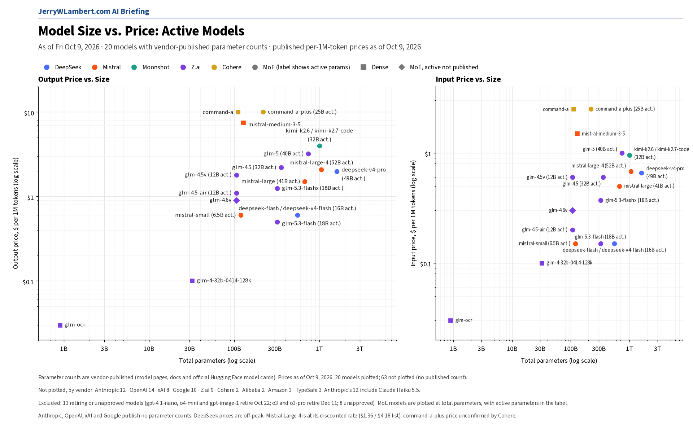
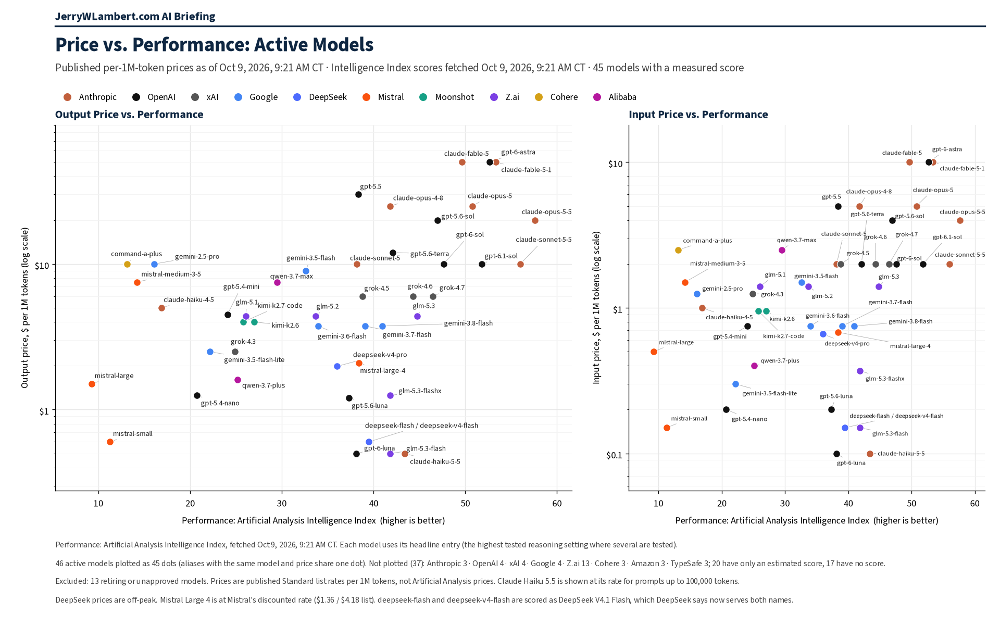

Daily Model Brief, October 9, 2026
No list price changed today. OpenAI adds a GPT-6.1 Sol Ultrafast tier at six times Standard, and Google sets an October 23 shutdown for a Deep Research preview.
Download PDFExecutive Summary
No vendor changed a published token price on an existing model since yesterday's brief. All 96 models this brief tracks keep yesterday's prices, including the new Claude Haiku 5.5 rates and the Claude Sonnet 5.5 cache-hit cut.
OpenAI added an Ultrafast service tier for GPT-6.1 Sol (gpt-6.1-sol) at six times Standard: $12 per million input tokens and $60 output for prompts up to 272,000 tokens, with cached input at $0.60. Longer prompts pay $24 / $90 for the whole request. Standard stays at $2 / $10. Ultrafast is chosen per request on the same model ID; it is not a new model.
Anthropic clarified how Claude Haiku 5.5 (claude-haiku-5-5) applies its long-prompt price. Prompt length counts every input token, including cache reads and cache writes, and a request over 100,000 tokens pays the higher rate for the whole request even when part of the prompt is a cache hit. The prices themselves did not change.
Google set an October 23, 2026 shutdown for deep-research-pro-preview-12-2025, with deep-research-preview-04-2026 as the replacement.
Alibaba's price page was readable again after two days and lists new US-region prices: qwen3.8-max at $2 input and $6 output, and qwen3.7-flash from $0.03 / $0.13 for prompts up to 32,000 tokens to $0.20 / $0.80 above 256,000 tokens.
Nothing today forces a budget change. Price any Ultrafast use at six times Standard, count cached tokens toward Haiku 5.5's 100,000-token line, and keep October 22 and 23 as hard dates for this month's retirements.
What This Means for Customers
- If you run latency-critical work on GPT-6.1 Sol, Ultrafast is now an option, but budget it at six times Standard. A workload that costs $1,000 a month on Standard would cost about $6,000 on Ultrafast. Fast mode stays at twice Standard.
- GPT-6.1 Sol's Fast and Ultrafast modes now support US and EU data residency. Regional processing adds 10% to the price.
- Re-check any Haiku 5.5 cost model that assumes cache hits keep a request under 100,000 tokens. They do not. Cache reads and writes count toward prompt length, so a long cached prompt reprices the whole request at $0.50 / $2.50.
- If you use Google's
deep-research-pro-preview-12-2025, move todeep-research-preview-04-2026before October 23. - If you serve US users on Alibaba Qwen, US-region prices run above Global:
qwen3.8-maxis $2 / $6 in the US against $1.65 / $4.951 Global. - October 22 and 23 hold.
gpt-4.1-nano,o4-miniandgpt-image-1(OpenAI) shut down the evening of October 22 (CT), along with Google'sgemini-omni-flash-previewand Veo 3.1 previews. Perplexity retires its routes to older OpenAI models at 7:00 PM CT on October 23. - Claude Haiku 4.5 is still active, with retirement not sooner than October 15 and no date set. Keep a tested fallback ready.
New Models and Price Changes
Prices in USD per 1M tokens.
| Vendor | Model ID | Status | Input | Cached | Output |
|---|---|---|---|---|---|
| OpenAI | gpt-6.1-sol | New Ultrafast service tier (6x Standard). Prompts up to 272,000 tokens. | $12.00 | $0.60 | $60.00 |
| OpenAI | gpt-6.1-sol | Ultrafast, prompts over 272,000 tokens (whole request). | $24.00 | $1.20 | $90.00 |
| OpenAI | gpt-6.1-sol | Standard, for comparison. Unchanged. | $2.00 | $0.10 | $10.00 |
| Anthropic | claude-haiku-5-5 | Prices unchanged. Cache reads and writes now stated to count toward the 100,000-token line. | $0.10 ($0.50 over 100K) | $0.01 ($0.05) | $0.50 ($2.50) |
| Alibaba | qwen3.8-max | New US-region row. Global unchanged at $1.65 / $4.951. | $2.00 | Not listed | $6.00 |
| Alibaba | qwen3.7-flash | New US-region row. Prompts up to 32,000 tokens. | $0.03 | Not listed | $0.13 |
| Alibaba | qwen3.7-flash | US, 32,000 to 256,000 tokens / over 256,000 tokens. | $0.10 / $0.20 | Not listed | $0.40 / $0.80 |
- GPT-6.1 Sol Ultrafast cache writes are $15 per million tokens ($30 on prompts over 272,000 tokens). Batch and Flex stay at half of Standard.
- Anthropic, Google, xAI, DeepSeek, Moonshot, Z.ai, MiniMax, Mistral, Perplexity, Meta, IBM and TypeSafe published token prices were unchanged since yesterday's brief, as were OpenAI's Standard prices. Mistral Large 4 stays on sale at $0.68 input and $2.09 output, with no end date.
- Perplexity renamed its Router API the Orchestrator API, and its Agent API now offers Claude Haiku 5.5 at Anthropic's rates.
- Amazon and Microsoft price pages could not be read today, ByteDance published no usable price table, and Cohere still publishes no token prices. Their last confirmed prices stand.
Deprecations
| Vendor | Model ID | Shutdown (CT) | Replacement | Note |
|---|---|---|---|---|
| deep-research-pro-preview-12-2025 | Fri Oct 23, 2026 (time not stated) | deep-research-preview-04-2026 | New today. | |
| OpenAI | gpt-4.1-nano o4-mini gpt-image-1 | Thu Oct 22, 2026, 7:00 PM CT | gpt-5.6-luna gpt-5.6-terra gpt-image-2.5-sunburst or gpt-image-2.5-flare | Unchanged. OpenAI lists Oct 23 with no time; 7:00 PM CT Oct 22 is 00:00 UTC Oct 23. |
| gemini-omni-flash-preview | Thu Oct 22, 2026 (time not stated) | gemini-omni-1.1-flash | Unchanged. | |
| veo-3.1-generate-preview veo-3.1-fast-generate-preview veo-3.1-lite-generate-preview | Thu Oct 22, 2026 (time not stated) | gemini-omni-1.1-flash | Unchanged. | |
| gemini-3.1-flash-image | No shutdown date announced | gemini-nano-banana-2.1 | Unchanged. | |
| gemini-3.1-flash-tts-preview gemini-2.5-flash-preview-tts gemini-2.5-pro-preview-tts | Tue Nov 17, 2026 (time not stated) | gemini-3.8-flash-tts or gemini-3.8-flash-lite-tts | Unchanged. | |
| gemini-3.1-flash-live-preview gemini-2.5-flash-native-audio-preview-12-2025 | Tue Nov 17, 2026 (time not stated) | gemini-3.8-live | Unchanged. | |
| Anthropic | claude-sonnet-4-5-20250929 | Mon Nov 30, 2026 (time not stated) | claude-sonnet-5-5 | Unchanged. |
| Anthropic | claude-haiku-4-5-20251001 | Not sooner than Thu Oct 15, 2026; no date set | None named | Watch item. Still active. |
| Cohere | command-r command-r-plus | Deprecated Sep 15, 2025; no shutdown date set | command-r-08-2024 command-r-plus-08-2024 command-a-03-2025 | Closed to new customers; existing users keep access until retirement. |
- Perplexity will retire its Agent API and Orchestrator API routes to older OpenAI models (openai/gpt-5.4, gpt-5.4-mini, gpt-5.4-nano, gpt-5.2, gpt-5.1, gpt-5 and gpt-5-mini) at 7:00 PM CT on Fri Oct 23, 2026 (00:00 UTC Oct 24). Unchanged.
- Google also lists deep-research-preview-04-2026 and deep-research-max-preview-04-2026 with no shutdown date announced.
- Unverified: Google's deprecations page still shows gemini-2.5-flash-image shutting down Mon Mar 15, 2027, with gemini-3.1-flash-lite-image as the replacement, while Google's pricing page says it shut down Oct 2, 2026. Confirm with Google before you budget either date.
Model Size vs. Price

Across the 20 active models whose vendors publish parameter counts, price rises only loosely with total size (rank correlation 0.39 on output price). Anthropic, OpenAI, xAI and Google publish no parameter counts, so their models, including Claude Haiku 5.5 and GPT-6.1 Sol, are not plotted. Prices as of October 9, 2026.
Price vs. Performance

Across the 46 active models with a measured Artificial Analysis Intelligence Index score (fetched Oct 9, 2026, 9:21 AM CT), price rises with performance only loosely (rank correlation 0.41 on output price). Claude Haiku 5.5 still leads at $0.50 or less per million output tokens (43.4). GPT-6.1 Sol scores 51.8 at $10 Standard; Ultrafast charges $60 for the same model.
All times Central. Prices, dates and model IDs are taken from first-party vendor pricing, model, deprecation and changelog pages as of 8:48 AM CT on October 9, 2026; chart prices are as of 9:21 AM CT on October 9, 2026. Performance scores are from the Artificial Analysis Intelligence Index. Items that could not be confirmed are marked unverified.